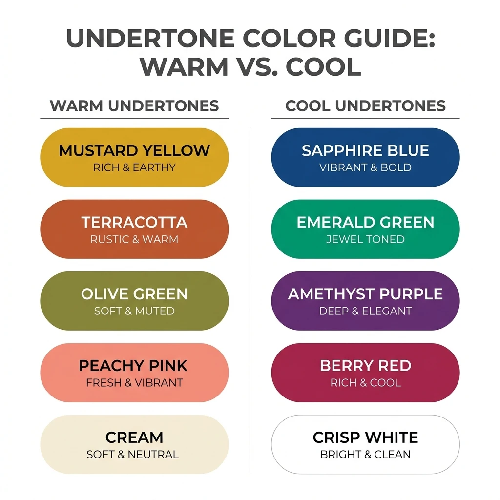
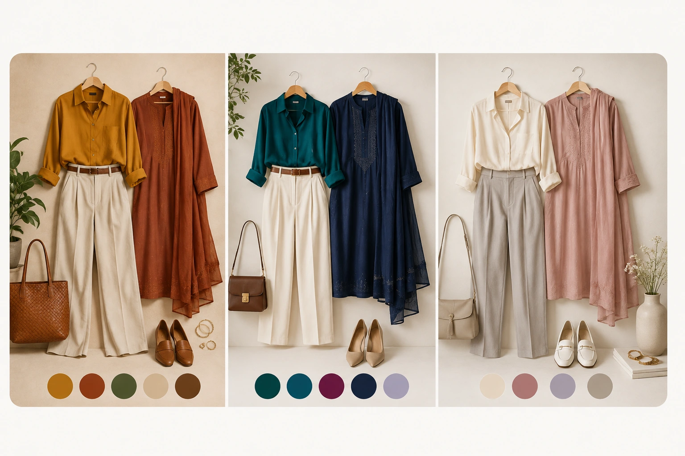

What Is Personal Colour Analysis?
Personal colour analysis is a method of identifying which clothing and accessory colours are most flattering for an individual, based on the natural characteristics of their skin, hair, and eyes — not personal taste or trends.
If you've never come across it before, the idea is simple: everyone's colouring has a few fixed characteristics, and certain clothing colours work with those characteristics better than others. Colour analysis looks at four things:
Undertone
The subtle warm, cool, or neutral cast beneath your skin's surface.
Depth
How light or deep your overall colouring is.
Contrast
How different your hair, skin, and eye colours are from one another.
Seasonal Palette
A named set of colours built from your undertone, depth, and contrast together.
How Colour Scan Works
Colourity's Colour Scan turns this into a simple, three-step process — no appointment, no guesswork.
Scan
Take a face scan in natural light, right from the Colourity app.
Analyse
Colourity AI reads your skin's undertone and depth, and describes it in plain language — like "warm and deep" or "cool and vivid" — never confusing technical season jargon.
Discover Your Palette
You get a personalised set of colours in real fashion vocabulary — mustard, peacock blue, mehendi green — built around your own colouring.
Understand Your Undertone
Undertone is the subtle colour beneath your skin's surface. It's different from how light or dark your skin is, and it's one of the biggest factors in whether a colour looks flattering or flat against your face.
Leans golden, peachy, or olive. Golden-based colours like mustard, rust, olive green, and warm coral tend to bring warmth and glow to warm undertones.
Try: mustard, rust, olive
Leans pink, red, or bluish. Blue-based colours like true blue, berry, emerald, and cool grey tend to look crisp and clean against cool undertones.
Try: berry, emerald, cool grey
Sits between warm and cool, with hints of both. Neutral undertones tend to have the most flexibility, working with a wider mix of golden- and blue-based colours.
Try: most balanced tones
Understand Contrast & Colour Depth
Depth describes how light or deep your overall colouring is, from fair to deep. Contrast describes how different your hair, skin, and eye colours are from each other — from low contrast (similar tones throughout) to high contrast (a strong difference, like dark hair with fair skin).
As a general starting point, higher-contrast colouring tends to suit clearer, more saturated colour combinations, while lower-contrast colouring tends to suit softer, more blended tones — though your exact Colourity palette accounts for your specific mix of undertone, depth, and contrast together, not just one factor alone.
Similar tones, gentle difference
Softer, muted and blended colours harmonise beautifully.
Noticeable but balanced difference
Balanced, medium-depth colours create natural harmony.
Strong difference, clear definition
Clear, rich and saturated colours bring out your natural radiance.
From Palette to Real Clothes
Knowing your palette only matters if it translates into what's actually in your wardrobe. A warm, deep palette might translate into mustard, rust, or olive green; a cool, vivid palette might lean toward berry, peacock blue, or emerald; a lighter neutral palette might favour cream, dusty rose, or soft grey.
These are examples of how a palette can translate into real, wearable pieces — not a claim that these exact colours suit everyone. The value of colour analysis is understanding which specific colours harmonise with your individual colouring, then applying that logic across the kurtas, sarees, shirts, and jackets already in your closet.

01
Warm & Deep
Mustard · Rust · Olive · Warm neutrals
Examples of warmer, deeper colour combinations.
02
Cool & Vivid
Peacock Blue · Emerald · Berry · Deep Navy
Examples of cooler, clearer colour combinations.
03
Light & Neutral
Cream · Dusty Rose · Soft Grey · Taupe
Examples of lighter, softer neutral combinations.
Examples, not rules — your Colourity palette is personalised to your own colouring.
Your Colour Passport
Once your Colour Scan is complete, Colourity builds your Colour Passport — a shareable summary card of your colour profile and best palette, described in plain language rather than technical season names.
It's built to be the thing you actually refer back to: a quick, saved reference for when you're shopping, packing, or simply deciding what to wear — instead of trying to remember your results from memory.
Colourity
Colour Passport
Your Profile
Warm & Deep
Your Palette
- Mustard
- Peacock Blue
- Mehendi Green
- Berry
- Cream
Illustrative example — your own Colour Passport reflects your personal scan results.
Why Some Colours Work Better Than Others
The same colour can look completely different depending on who's wearing it — because it's reacting with your individual undertone, depth, and contrast, not existing in isolation.
When Colours Harmonise
Colours drawn from your palette tend to make your complexion look brighter, more even, and more balanced — your face becomes the focal point instead of the outfit.
When Colours Clash
Colours pulling against your natural undertone can make your complexion look duller, more tired, or visually disconnected from the outfit — even when the item itself is well-made.
Everyday Styling Confidence
Once you know your colours, everyday decisions get faster. Instead of second-guessing an outfit in the mirror, you're choosing from a set of colours you already know work for you — at work, on a casual weekend, or getting ready for a family wedding function.
The goal isn't a stricter dress code. It's fewer moments of doubt.
Look focused, trustworthy and effortlessly professional.
Feel fresh and confident in your everyday moments.
Look radiant and leave a lasting impression.
Stay comfortable and stylish, your way.
When your colours work for you, everything follows — your wardrobe, your outfit, your confidence, your day.
Frequently Asked Questions
Personal colour analysis is the process of identifying which clothing colours are most flattering for your individual skin undertone, depth, and contrast — so the colours you wear work with your complexion rather than against it.
Warm undertones lean golden or olive and are typically complemented by earthy, golden-based colours. Cool undertones lean pink or rosy and are typically complemented by blue-based colours. Neutral undertones sit between the two and can usually wear a broader mix of both. Colourity identifies which of these best describes you during your Colour Scan.
Seasonal colour analysis groups undertone, depth, and contrast into a small set of named palettes, often described using season names like "autumn" or "winter". Colourity determines your seasonal palette but describes it to you in plain, human language rather than technical season names.
Yes. Your colour palette shows you which colours are most likely to harmonise with your natural colouring — it isn't a restriction on what you're allowed to wear. Many people mix palette colours with personal favourites, especially for accessories or trend pieces.
Yes, you can retake your Colour Scan in the Colourity app at any time.
AI colour analysis, like Colourity's Colour Scan, uses your phone to instantly analyse your skin undertone and generate a personalised palette without booking an appointment. It's built to give accessible, structured guidance rather than to replace a bespoke in-person consultation for those who want one.
Know Your Colours. Now Put Them to Work.
Once you know which colours suit you, the next step is understanding what's already sitting in your closet. Colourity's Digital Wardrobe turns your existing clothes into a searchable, colour-tagged closet — so you can see exactly which pieces already match your palette.
See how Digital Wardrobe worksRelated Masterclass Guides
You Know Your Colours. Ready to Wear Them?
Download Colourity on Android to get your personalised Colour Passport for free.
Get Colourity App